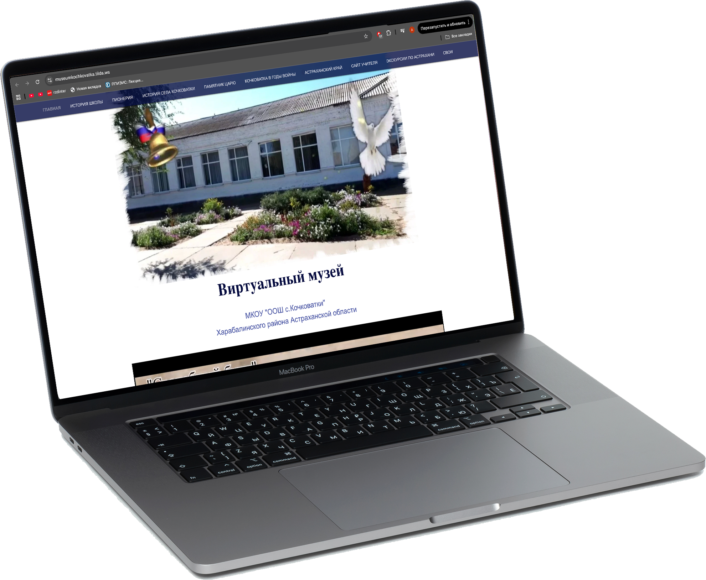
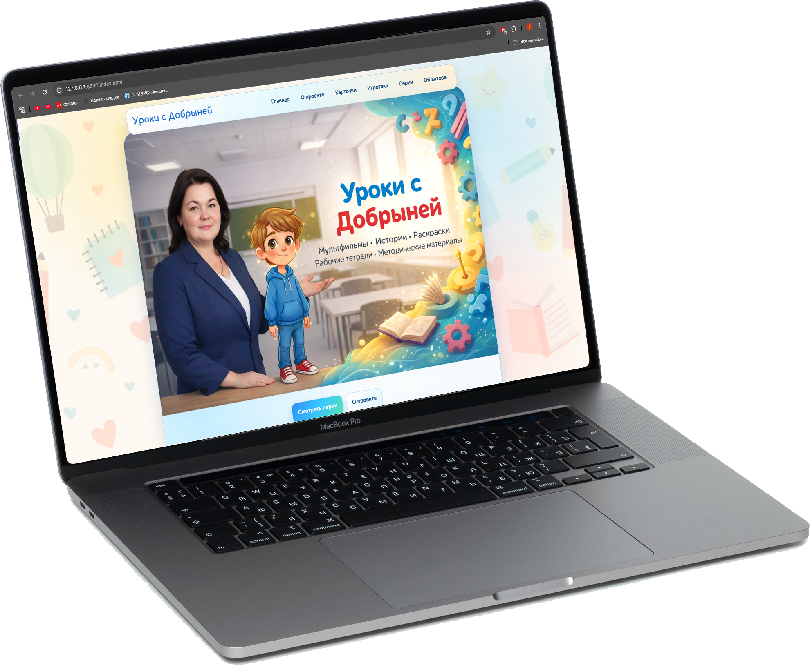

Победитель муниципального этапа конкурса «Учитель года — 2021»
Коноплева Ольга Сергеевна
Учитель истории, обществознания, начальных классов
Стаж
21 год
Образование
Высшее, учитель истории
Астраханский государственный университет
Средне-специальное, учитель начальных классов
АПУ им. Н. К. Крупской, г. Астрахань
Контакты
- Телефон +7 996 276-68-89 (MAX) • +7 927 661-50-34
- Email konopleva10@mail.ru
- VK vk.com/okonopleva
Профессиональная информация
Квалификация и статус
Актуальные сведения о категории, общественной и экспертной деятельности.
Высшая квалификационная категория
Почётный работник сферы образования Российской Федерации
Руководитель районного методического объединения учителей истории
Федеральный общественный эксперт дополнительных профессиональных программ повышения квалификации педагогических работников
Член Всероссийского сообщества наставников-просветителей
Профессиональный профиль
Педагог с 21-летним стажем. Сочетаю фундаментальную предметную подготовку, методическое лидерство, экспертную деятельность и внедрение инновационных образовательных практик. Специализируюсь на духовно-нравственном и гражданско-патриотическом воспитании, метапредметном обучении, проектной деятельности, а также использовании искусственного интеллекта в образовании и обучении педагогов современным цифровым инструментам.
Преподаваемые дисциплины
История
Обществознание
ОДНКНР
ОМРК
Начальные классы
Профессиональный опыт
Стаж педагогической деятельности — 21 год
Ключевые направления деятельности:
- преподавание истории, обществознания, внеурочная деятельность в начальной школе;
- руководство районным методическим объединением учителей истории;
- организация и проведение районных методических семинаров;
- проведение открытых занятий и мастер-классов;
- федеральная экспертная деятельность в сфере ДПО;
- внедрение цифровых технологий и искусственного интеллекта в образовании;
- проведение обучающих семинаров и практикумов для педагогов по использованию ИИ в образовательном процессе.
Достижения и профессиональные награды
Результаты конкурсной и экспертной деятельности.
Обладатель гранта Главы МО «Харабалинский район»
Финалист Всероссийской метапредметной олимпиады «Команда большой страны — 2022»
Гран-при областного этапа, победитель межрегионального (ЮФО) этапа, призёр всероссийского этапа
XX Всероссийского конкурса «За нравственный подвиг учителя — 2025»
Финалист Всероссийского конкурса «Растим гражданина — 2025»
Участник конкурсных треков «Медиа» и «Государство» проекта
«Флагманы образования — 2025»
Профессиональное развитие и обучение (2025)
Участие в форумах, семинарах и курсах повышения квалификации.
Ключевые мероприятия
Всероссийский форум специалистов системы воспитания «Растим гражданина», Москва
Семинар-практикум «Летний ПедСовет — 2025», очное участие, ЦЗ «Машук»
Международный научно-практический форум «Без срока давности. Нюрнберг. 80 лет», Москва
XXXIV Международные Рождественские образовательные чтения, Москва
Курсы повышения квалификации
«Педагог-новатор: как учить и вдохновлять в цифровую эпоху», 2025
«Тест-драйв: как писать ясно и убедительно», 2025
«Цифровизация государства: основы госдиджитал», 2025
«Содержательные и методические аспекты преподавания курса „История нашего края“ (ИРО «Платформа»), 2025
«Профессионально-общественная экспертиза ДПП повышения квалификации педагогических работников», ГУП «ПроСвет», 2025
Профессиональные достижения
Курсы, обучение
Достижения учащихся
Авторские образовательные проекты
Цифровые ресурсы и авторские инициативы в образовательной деятельности.
Образовательный сайт «Живой музей»
Виртуальный школьный музей открывает возможности для широкой аудитории: электронные материалы можно использовать на уроках, классных часах, при подготовке рефератов и исследовательских работ. Доступна виртуальная экскурсия и экскурсы в историческое прошлое.


Уроки с Добрыней
Уроки с Добрыней - авторский образовательный проект духовно - нравственного воспитания младших школьников. Основан на авторских мультфильмах и рабочих тетрадях.